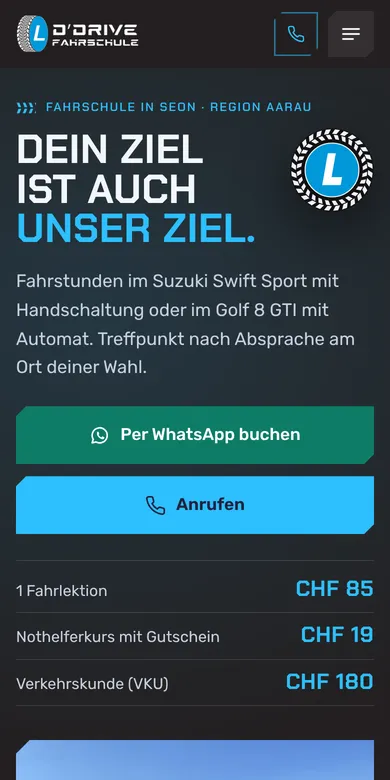

Design A
Reifenprofil
Dunkel wie Ihr Logo, in Navy und Himmelblau wie Ihre heutige Website: Eine Reifenspur rollt herein, das blaue L-Rad aus dem Logo dreht sich ein, dann stehen Ihre beiden Fahrschulautos da. Darunter folgen die Preise als grosse Zahlen, der Nothelferkurs für CHF 19 und der Weg ab 2027 als Spur mit Stationen.
- Dunkel
- Reifen aus dem Logo
- Preise gross